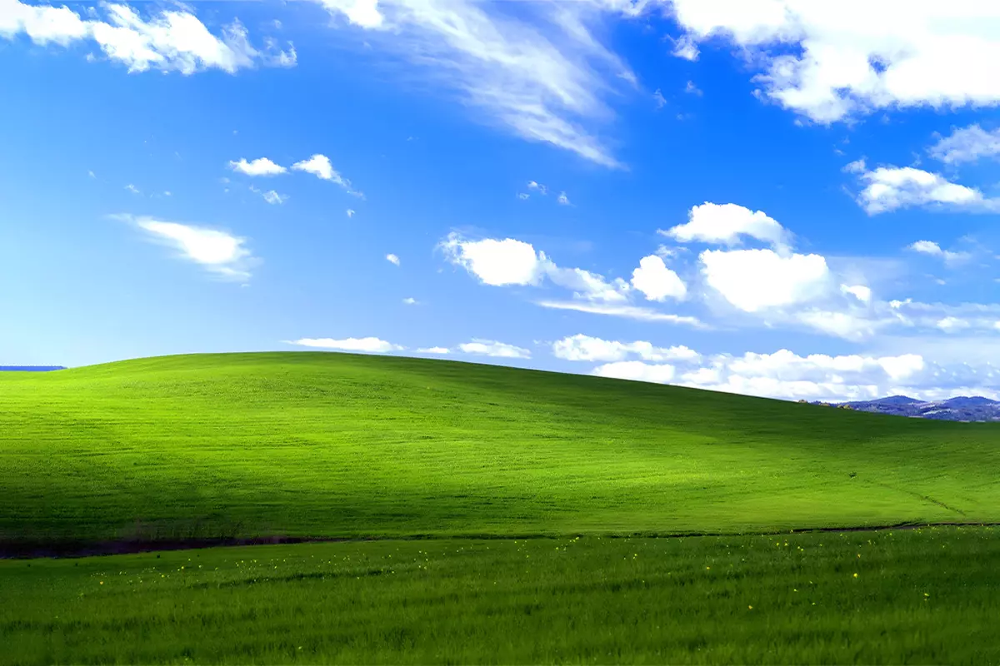
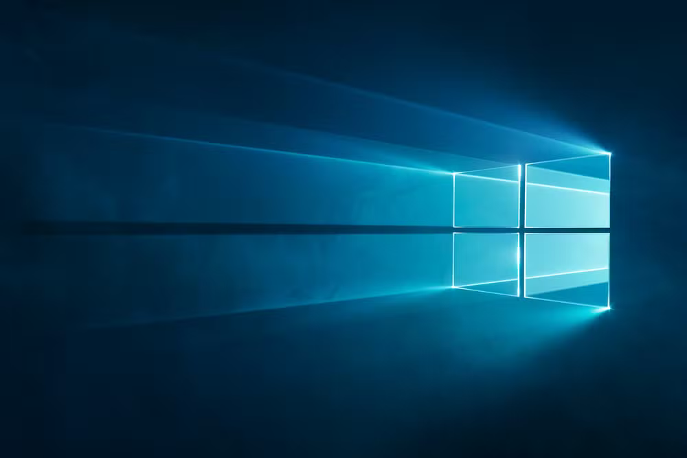

Windows:

O Windows é o sistema operacional mais utilizado em todo o mundo perdendo só para o Android,
mas sim o Windows está em 2°lugar de sistemas operacionais mais usados no mundo de acordo com o CanalTech.
História:
O Windows foi desenvolvido pela Microsoft, que havia criado uma interface gráfica (GUI) sobre o MS-DOS (O antecessor do Windows)
nos anos 80 com o Windows 1.0 (1985), facilitando o uso com o mouse e ícones que logo o windows ficou evoluindo até chegar no Windows 95 (1995)
que introduziu o menu iniciar e consolidou o domínio no mercado, logo após de chegar as versões icônicas que todo mundo conhece como
windows XP (2001) que trouxe sucesso e estabilidade, enquanto o Windows 7 (2009) foi um marco de estabilidade, e o windows 10 (2015) que unificou
plataformas com o Menu iniciar de volta, mantendo a liderança, até chegarmos hoje no windows 11 (2021).
Certo já que conhecemos a história do windows que inclusive foi muito interessante, vamos a alguns pontos positivos e negativos de uso:
Curiosidades sobre o windows (5 para não ser tão longo):
1) O windows NT foi considerado o primeiro sistema operacional.
2) O windows teria outro nome se não fosse pela intervenção do chefe de marketing da empresa naquela época, então agradeça a Rowland Hanson.
3) A música de inicialização do sistema do windows 95 custou US$35 mil.
4) O icônico papel de parede do windows XP é uma foto real que fica localizada no condado de Sonoma, na Califórnia.
5) Windows Vista e windows 8 são extremamente odiados.
Imagens nostalgicas:
 Papel de parede do windows XP (2001)
 Papel de parede do windows 10 (2015)

Painball, um dos jogos que existia no windows XP (Você pode jogá-lo no site: https://pinball.alula.me/
Campo minado, um dos jogos que também existia no windows (Atualmente você ainda pode jogar
o campo minado no site: https://campo-minado.com/)